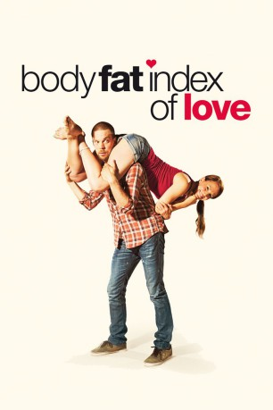

#5072 Body Fat Index of Love
 
 IMDB-Wertung: 5.6 / 10
IMDB-Wertung: 5.6 / 10  Metascore: 0
Metascore: 0 
Für die kreativen Freigeister Stigu und Ella gibt es nur eine Art von Beziehung: regelmäßiger, guter Sex ohne Verpflichtung und ohne feste Bindung. Es scheint fast ironisch, dass gerade diese beide für die Umsetzung einer großen Werbekampagne zum Thema „Ehe und Familie - Nachhaltige Beziehungen“ gebucht wurden. Mit reichlich Zynismus arbeiten sich die beiden Werbeprofis in das Thema ein und müssen entdecken, dass es sich zunehmend nicht nur um die Gefühle und Beziehungen auf dem Werbepapier handelt sondern auch um zärtliche Zuneigung zueinander. Zusammen erleben sie einen etwas anderen skandinavischen Sommer, der in einem traditionellen Finale gipfelt: Dem Ehefrauentragen-Wettbewerb. Hat die Werbung für die Liebe doch etwas bewirkt
Jahr: 2012
Dauer: 93 Minuten
FSK: 12
Land: Finnland Studio: Lighthouse Home EntertainmentTonspuren:
Untertitel: Deutsch,
Auflösung: 1080p (1920x816) Größe: 6901 MB
Genre: Komödie
Regisseur: Mikko Kuparinen
Drehbuch: Chris Kelly
Soundtrack:
Darsteller:
- Mirja Oksanen als BMW represantive
- Mikko Nousiainen als Stigu
- Severi Saarinen als Personal trainer
- Kristo Salminen als Karri
- Juha Hippi als Keda
- Anna Maria Pie als Busines Woman, Bypasser , uncredited
- Emilia Sinisalo als Anna
- Antti Virmavirta als Stigun isä
- Jarkko Niemi als Nicke
- Miina Maasola als Ella Sadeoja
- Mari Perankoski als Susanna
- Jorma Karlstedt als BMW represantive
- Max Bremer als Teppo
- Kaija Pakarinen als Stigun äiti
- Kari Sorvali als Jussi
- Sanna Stellan als Taru
- Wanda Dubiel als Kikka
- Sanna-Kaisa Palo als Raija
- Elina Kurikka als Nicke's wife
- Hanna Vahtikari als Maisa
- Janne Vakkilainen als Open Mic host
- Vilho Karhu als Karri's and Saara's child at Kätilöopisto
- Johanna Kokko als Saara
- Iisak Harilo als Kikka's and Teppo's child
- Oskari Koskinen als Fireman
- Artturi Sairinen als Children talking about love
- Nea Suuraho als Children talking about love
- Petrus Mäki-Ontto als Children talking about love
- Joni Juntunen als Eukonkantoparit
- Marcus Hursthouse als Children talking about love
- Mikko Laine als Men in the sauna
- Janne Jalonen als Electrician
- Tarmo Kalmari als Men in the sauna
- Marko Karvonen als TV crew in Sonkajärvi
- Tuula Paananen als Juustotiskin myyjä
- Timo Siliämaa als TV crew in Sonkajärvi
- Laura Hakkarainen als Susanna's daughter
- Vesa Pentikäinen als Eukonkantoparit
- Oiva Koukkula als Karri's and Saara's child at christening
- Linda Nurmi als Taru's and Keda's child
- Vanilja Kukkonen als Children talking about love
- Nauri Nykänen als Men in the sauna
- Malin Gustafsson als Children talking about love
- Juha Svahn als BMW represantive
- Onni Weimer als Kikka's and Teppo's child
- Jaana Haavikko als Eukonkantoparit
- Nea Voutilainen als Children talking about love
- Kirsti Miettinen als Children talking about love
- Ira Hietikko als Juustotiskin myyjä
- Tuomas Ovaskainen als Children talking about love
Datei: X:\2012(A-F)\Body Fat Index of Love (2012, FSK12, 1920x816).mkv seit 23.12.2016
Festplatte: HD 2012(A-M)
 Es gibt insgesamt 102 Filme in der Gruppe '2012(A-F)'
Es gibt insgesamt 102 Filme in der Gruppe '2012(A-F)'